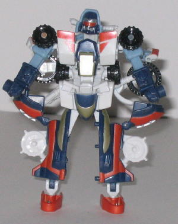

High
Wire
High
Wire
Difficulty of Transformation : Easy
Color Scheme : Off-white, pale light blue, black, and some yellow, dark flat navy blue, sparkly red-orange, and silver
Individual Rating : 6.6
Perceptor
Team
Allegiance
: Minicon
Size
: Basic (Mini-Con 3-pack)
Team Gimmick
: Ability to combine
into the robot
Perceptor
Overall Rating
: 4.9
High
Wire
Difficulty of Transformation
: Easy
Color Scheme
: Off-white, pale light
blue, black, and some yellow, dark flat navy blue, sparkly red-orange,
and silver
Individual Rating
: 6.6
High Wire's upgraded
vehicle mode is not that of a mere mountain bike- now it's a full-fledged
gas-powered dirt bike. And, although the color scheme for High Wire is
fairly good, as is his mold detailing, I have a really big problem with
this mode- it doesn't fit together well at all. There are no pegs to speak
of to lock any of High Wire's various parts in their place, so you have
a very floppy, disproportionate, odd-looking bike. It's just incredibly
unstable- not in the sense of it falling apart, but in the sense of it
being a solid, stable, rock-hard vehicle mode. High Wire's Minicon symbol
is painted yellow on the front of his bike mode, and his Minicon port is
on the center of his right side, on the piece that becomes his head in
robot mode.
High Wire's robot mode,
on the other hand, rocks. It's an IMMENSE improvement over the
Armada
version's
robot mode. His proportions are great, so no problems there.
His wheels, being on arms instead of his legs, now truly complement this
mode instead of detracting from it. His also has EXCELLENT articulation
for such a small toy- he can move at the head, shoulders, elbows, waist,
hips, knees, and feet, and most of these are on ball joints! As such, you
can get High Wire into a ton of cool poses. A couple of small problems,
though- for one, he has no paint detailing whatsoever above the waist,
and his head really needs some. His right arm is also just a wheel, which
looks kind of odd. But these are overshadowed by his sheer awesomeness
otherwise. High Wire has another Minicon symbol visible in this mode, on
the right side of his chest.
High Wire has a very
unstable and wobbly vehicle mode, but his robot mode rocks the house. The
best of the Perceptor Minicon Team.
Grindor
Difficulty of Transformation
: Very
Easy
Color Scheme
: Dark flat navy blue,
off-white, sparkly red-orange, silver, and some dull gold, yellow, and
black
Individual Rating
: 4.3
No longer a skateboard,
Grindor is now a futuristic hovercraft in vehicle mode. This mode is very
nice, with no extras to speak of. The color scheme is probably the best
of the three Minicon members- what with being primarily a good mix of navy
blue and orange-red- and he has great paint detailing. His mold detailing
is a little on the sparse side, but I can let this slide for the most part
seeing as how he's supposed to be a sleek little vehicle. Grindor's Minicon
symbol is on his right hoverfan, and his Minicon port is on the center
of the underside of this mode.
Grindor's robot mode,
however, looks ridiculous. His main body is ludicrously huge when compared
with his short, stubby feet and very oddly-proportioned arms. They aren't
even arms, really- just those hoverfans with three little fingers attached
to them. Because of his odd proportions, Grindor's articulation is also
pretty bad- he can move at the shoulders, backward at the knees, and he
can move his feet from side to side, but that's it. As for positives...
hmm... let's see... well, his color scheme is still okay, and his head
looks pretty cool, what with the visor and exhaust vents. That's... really
all the pluses in this mode.
Grindor's vehicle mode
is very cool and has wonderful paint detailing, but his robot mode has
some of the most ridiculous proportions ever seen on a Transformer, and
looks really goofy. You'll definitely want to keep this guy in his alt
mode when he's not combined as Perceptor.
Sureshock
Difficulty of Transformation
: Very
Easy
Color Scheme
: Off-white, dark flat
navy blue, black, and some sparkly red-orange, dull gold, and light pale
blue
Individual Rating
: 2.7
Instead of a scooter,
Sureshock is now a heftier ATV. In his alt mode, Sureshock looks fairly
good, for the most part. He has a decent color scheme- similar to High
Wire's, but with a bit more dark blue- and some nice paint detailing. His
mold detailing on the vehicle mode parts is severely lacking, though, for
a reason I can't quite figure out, since he IS supposed to be a rough-and-tumble
dirt vehicle, after all. A rather noticeable concern I have about this
mode, though, is that the robot arms fare very obvious on the bottom- they're
just unceremoniously undercarriage junk. Heck, with the two Minicon ports
on the ends of said arms, his undercarriage just about touches the ground,
which doesn't look right on an ATV. Sureshock's Minicon symbol is on the
front visor.
As bad as Grindor's
robot mode is, Sureshock's is worse. It's horrendous to even look at. He's
got long gorilla-like arms for his short stature, and extremely small,
pathetic-looking feet that are basically just plastic sticks with wheels
on the bottom. The visor and handlebars on his crotch looks pretty odd.
Also, Sureshock has no real body to speak of- just a thin piece of plastic
connecting the two halves of his body. His face also folds up from the
seat of his vehicle mode, but it leaves a rather noticeable gap in between
the two pieces. His articulation is pretty bad- he cam move at the shoulders
and sideways at the knees, but that's it. ...I don't have anything positive
to say about this mode. At all. Avoid Sureshock's robot mode like the plague.
Sureshock's vehicle
mode is decent, if you ignore the undercarriage junk. But his robot mode
is one of the worst robot modes out of any Transformer, just barely not
beating out Armada High Wire's. Ick ick ick.
Perceptor
(Gestalt Form)

Difficulty of Transformation:
Medium
Color Scheme
: Dark flat navy blue,
off-white, sparkly red-orange, black, and some dull gold, silver, yellow,
and light pale blue
Individual Rating
: 5.9
Energon Perceptor, while not reaching the level of badness that Energon Grindor or Sureshock do, is a step downwards from Armada Perceptor. He's much less solid than his predecessor, and too much of him looks like a jumble of plastic parts. In fact, almost all of High Wire's form just hangs off his back. And it doesn't complement this mode at all this time, since the wheels don't hover above the shoulders or anything like that. It just looks... sloppy. His legs are more solid than the rest of him, but the actual feet are still too small, and there are no visible knees, given that he can only move legs from side-to-side at the hips and knees. Sureshock makes up a pretty servicable chest, although from a side view, Perceptor looks pretty flat. What's odd, though, is that although Perceptor has regular shoulder articulation, his elbow articulation is backwards. They CAN bend, but only so that they're facing behind him, making it look like he's dislocated something! It's a very odd design decision, and not a good one. In addition, Perceptor's face, while nice-looking in and of itself, makes it looks like he has to really stretch just to see below his chest- his head is too far back. The color schemes really work nicely in this mode, though, and Perceptor's overall proportions aren't bad.
The Street Action Team of Armada gets upgraded into the Perceptor Team of Energon... but they're still just as bad. High Wire may be a pretty sizable improvement, but Grindor, Sureshock, and Perceptor are definitely inferior to their Armada versions. Not recommended unless you're either a completist or just really have a thing for Minicons.
Review by Beastbot